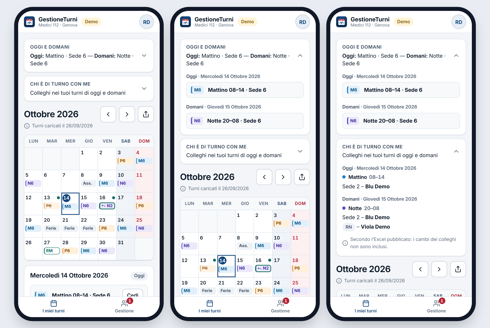

Un'app semplice, gratuita e riservata che ti mostra i turni pubblicati, la sede e le ore del mese, senza dover cercare la tua riga nel file Excel.
Inquadra il codice con la fotocamera del telefono e tocca il collegamento che compare. Si apre la pagina dell'app: premi Accedi con Google e scegli il tuo account Google, lo stesso che usi per Gmail. Non devi creare nessuna password nuova.
Al primo ingresso vedrai un messaggio di attesa: è normale. L'amministratore controlla chi sei e ti collega al tuo nome. Da quel momento, ogni volta che apri l'app, trovi i tuoi turni.
Per averla sempre a portata di mano, aggiungila alla schermata Home. Su iPhone, in Safari, tocca il pulsante Condividi e poi Aggiungi alla schermata Home; su Android, in Chrome, apri il menu con i tre puntini e scegli Installa app. Comparirà un'icona come quella di qualsiasi altra app.
Appena entri vedi il turno di oggi e di domani, con la sede e l'orario. Sotto c'è il calendario del mese, con mattino, pomeriggio e notte in colori diversi, i weekend e le festività già segnati, compreso San Giovanni. L'app conta anche le ore del mese e i weekend liberi, così non devi fare i calcoli a mano.
Quando un mese non è ancora stato pubblicato, l'app ti mostra una previsione basata sulla turnazione, ben distinta dai turni ufficiali. È utile per organizzare ferie, impegni di famiglia e appuntamenti con un po' di anticipo.
Se devi cedere un turno, l'app ti indica quali colleghi possono prenderlo rispettando le 11 ore di riposo. Scelto il collega, prepara anche il messaggio per chiederglielo, che puoi correggere e inviare su WhatsApp. Quando ti risponde di sì, confermi il cambio: il turno ceduto resta visibile barrato con il nome del collega, quello ricevuto riporta chi te l'ha dato, e le ore si aggiornano da sole.
Per ogni giorno in cui lavori puoi vedere quali colleghi sono di turno nelle altre sedi e chi è reperibile. Per i mesi non ancora decisi puoi segnare sul calendario i giorni in cui non sei disponibile: l'app scrive per te il testo dell'email con le date in ordine, e sei tu a inviarla.

Puoi chiedere che al tuo profilo venga aggiunto l'account Google di un familiare, che potrà vedere i tuoi turni e i tuoi cambi ma non modificare nulla né vedere i turni dei colleghi. Niente più password prestate o fotografie del foglio dei turni.
Con un tocco trasformi il calendario del mese in un'immagine da mandare a chi vuoi, senza nomi di colleghi né ore. Se qualcosa non torna o hai un'idea, dal pulsante Feedback scrivi direttamente all'amministratore, fino a tre messaggi al giorno.
L'app funziona su iPhone, Android e computer, con il tema chiaro o scuro. Non si scarica da nessun negozio, non ha pubblicità ed è gratuita, per te e per il servizio.
La riservatezza non è affidata alla buona volontà di nessuno: sono le regole del database a decidere chi può leggere cosa. Ecco, senza giri di parole, cosa succede ai tuoi dati.
Entri solo con il tuo account Google. L'app riceve il tuo nome e la tua email, mai la password. Nessuno entra da solo: ogni account viene approvato dall'amministratore.
Li vedi tu e gli eventuali familiari che hai fatto aggiungere. Li vedono anche l'amministratore e i suoi delegati, che li caricano dallo stesso file Excel che già oggi ricevi.
I medici iscritti vedono la turnistica ufficiale del mese, la stessa del file Excel, per sapere chi è di turno e chi può dare un cambio. Non vedono i tuoi cambi, le tue indisponibilità né i tuoi messaggi. I familiari non vedono i turni dei colleghi.
Sono solo tuoi: nemmeno l'amministratore li vede. Le indisponibilità arrivano a chi organizza i turni solo se invii tu l'email.
L'app non invia nulla al posto tuo e non conosce il tuo numero di telefono. I messaggi di Feedback li legge solo l'amministratore; se chiudi una conversazione, viene cancellata per entrambi.
Oltre a nome ed email, l'amministratore vede solo il giorno del tuo ultimo accesso. Niente pubblicità, nessun tracciamento personale. L'app conta in forma anonima quante volte vengono usate le funzioni, per capire quali sono utili; nessun dato personale. Puoi chiedere in qualsiasi momento di disattivare o cancellare il tuo account.
Sul servizio Firebase di Google, protetti dalle regole di accesso. Anche chi conosce l'indirizzo dell'app non può leggere i dati degli altri.
Il codice dell'app è pubblico e chiunque può controllare come funziona. Non contiene nessun dato reale: nomi e turni stanno solo nel database protetto.